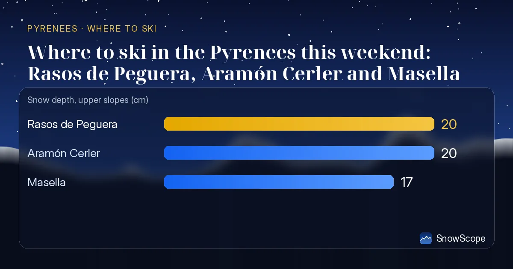
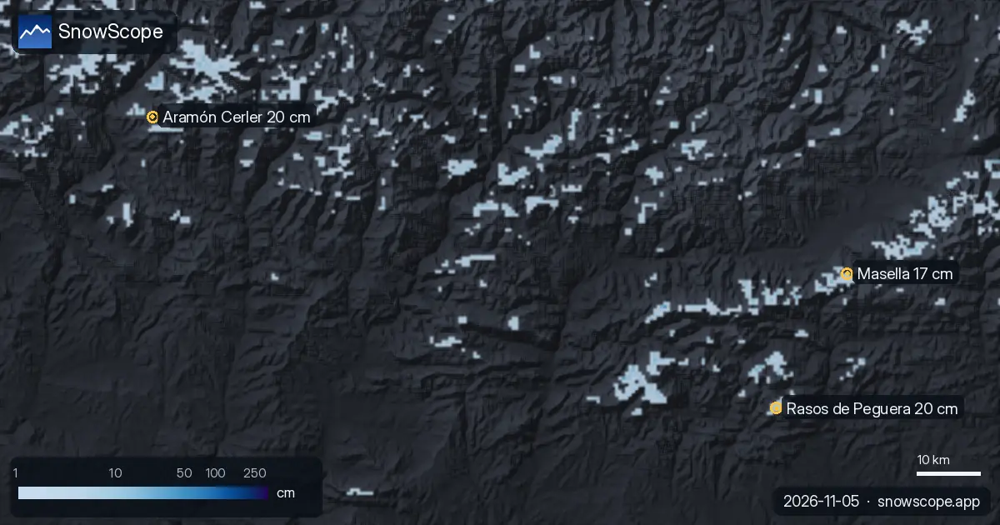
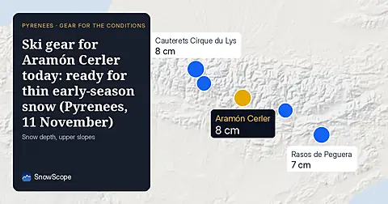

Where to ski in the Pyrenees this weekend: Rasos de Peguera, Aramón Cerler and Masella
Three resorts stand out for the weekend of 7 November: Rasos de Peguera, Aramón Cerler and Masella. Each has 17 to 20 cm on its upper slopes today, with no more snow forecast before Sunday. This is the best chance to ski while the new snow from the past three days is still there.
See the live snow forecast for Rasos de Peguera in the SnowScope appSnow depth, powder alerts and the 3D map, free.
Which resort, which height?
Rasos de Peguera leads with 20 cm on upper slopes. It received 15 cm of new snow in the last 72 hours, mostly on Tuesday 3 November. Aramón Cerler also holds 20 cm at the top after 7 cm of fresh snow. Masella has 17 cm on its upper runs and got 9 cm in three days.
All three are small resorts where the snow sits mostly above 1,900 m. At lower elevations, the base layer is thin or bare. This means you should aim high and stay on marked runs where the snow is deepest.
| Resort | Snow depth | New snow, 72 h | Coming, next days | Top |
|---|---|---|---|---|
| Rasos de Peguera | 20 cm | 15 cm | 0 cm | 2,036 m |
| Aramón Cerler | 20 cm | 7 cm | 0 cm | 2,618 m |
| Masella | 17 cm | 9 cm | 0 cm | 2,509 m |

When did the snow arrive?
The heaviest falls came on Tuesday 3 November: Rasos de Peguera got 12 cm that day, Aramón Cerler 6 cm and Masella 7 cm. Since then the snow has been light—1 cm on Wednesday, 1 cm on Thursday (today). No more snow is in the forecast through Sunday.
This timing matters for your plans. The fresh snow is now three to four days old, so it has begun to settle and bond to what lay beneath. It is still softer than it will be by mid-week.

Temperature and the snow line
Watch the freezing level as the weekend progresses. On Saturday 7 November it rises to around 2,850 m at its peak, still above all three resorts' upper runs. By Sunday the freezing level climbs further, reaching 3,130 m in the afternoon.
What this means: rain is unlikely on Saturday at these elevations, but slopes facing south will soften in the sun. Sunday looks clearer and colder at high altitude, though the air is growing warmer. Early morning runs on Sunday will be the most rewarding.
Comparing with past winters
Early November is early. At Rasos de Peguera's mid-mountain height of 1,931 m, today's 5 cm of snow is better than 44 out of the last 46 winters on this date. At Aramón Cerler's mid-mountain (2,060 m), there is no snow depth to measure, but historically there is almost none at this altitude in early November either.
In other words: this is a good weekend by early-season standards. The snow will not last long, so if you plan to visit, go soon.
On the ground: what satellite saw
At Rasos de Peguera and Aramón Cerler, the latest clear views were older (2 and 31 October respectively), so the snow there is entirely from recent falls. This matters: it confirms the snow is new and has not been sitting around since October.
The drawback is that new, early-season snow is often thin and may hide rocks or grass. Stick to groomed runs and avoid terrain you do not know well.
Getting ready for the weekend
Before you drive to the mountains, check each resort's website for lift opening times and any closures. Snow depth on the SnowScope map does not mean the resort is running. Many small Pyrenees resorts open later in the season.
Bring layers for a big temperature swing: Saturday morning will be cold at 2,000 m, but midday sun will soften the surface. Sunscreen, goggles and a warmer base layer for the afternoon are essentials. By Sunday the air will be colder but the snow surface may be icy early on, so edges and patience will help more than fresh powder technique.
Tips for skiers
- Start early on Saturday morning to ski the new snow before the sun softens it. Upper slopes and north-facing aspects stay firmest longest.
- Check the official avalanche bulletin before any off-piste or touring. Early-season snowpack has weak layers; stability can change quickly with temperature swings.
- These resorts' lower runs may be bare or skiable only above 1,800 m. Plan your day around the highest terrain available rather than trying to descend to the base.
- Rocks and grass hide under early snow. Stay on marked pistes and runs you know. Ungroomed terrain is riskier now than in deep winter.
- No fresh snow is forecast after today, so conditions will get harder and ropier through the week. The weekend is your window.
About these numbers
Resort snow depths are the deepest snow on the resort's upper slopes on the date shown; they are estimates for an area, not a measurement at one point. Forecasts can change. Always read the official avalanche bulletin before going off-piste.
Official avalanche bulletins: Météo-France / Meteocat / AEMET
Cite this report
For research, teaching or the press: the numbers and charts are free to reuse under CC BY 4.0 with this citation.
SnowScope (2026), Where to ski in the Pyrenees this weekend: Rasos de Peguera, Aramón Cerler and Masella, https://snowscope.app/blog/en/2026/11/pyrenees-where-to-ski-this-weekend-5-november-2026.html, accessed 2026-11-05
SnowScope (Atlas Labs). (2026, November 5). Where to ski in the Pyrenees this weekend: Rasos de Peguera, Aramón Cerler and Masella. SnowScope snow reports. https://snowscope.app/blog/en/2026/11/pyrenees-where-to-ski-this-weekend-5-november-2026.html
BibTeX
@misc{snowscope2026pyreneeswheretoskithiswe,
author = {{SnowScope (Atlas Labs)}},
title = {Where to ski in the Pyrenees this weekend: Rasos de Peguera, Aramón Cerler and Masella},
year = {2026},
month = nov,
howpublished = {\url{https://snowscope.app/blog/en/2026/11/pyrenees-where-to-ski-this-weekend-5-november-2026.html}},
note = {Published 2026-11-05 10:27 UTC; accessed 2026-11-05}
}· CC BY 4.0 · Methods, data and tools →
Rasos de Peguera: snow and temperature by height, this winter vs last (tools) →
Follow Rasos de Peguera
Free: a message when fresh snow is coming, and the forecast every morning.
More snow reports

Rasos de Peguera got 15 cm of new snow in the last 72 hours. It now has about 20 cm on its upper slopes.

Thin snow under 10 cm across the Pyrenees on 11 November. Pack sharp edges, waterproof shell, helmet. Best snow on highest north-facing runs.

On 11 November the Pyrenees held almost no snow: Estació d'esquí de Port-Ainé has 0 cm against 6 cm last year. The season is weeks behind.